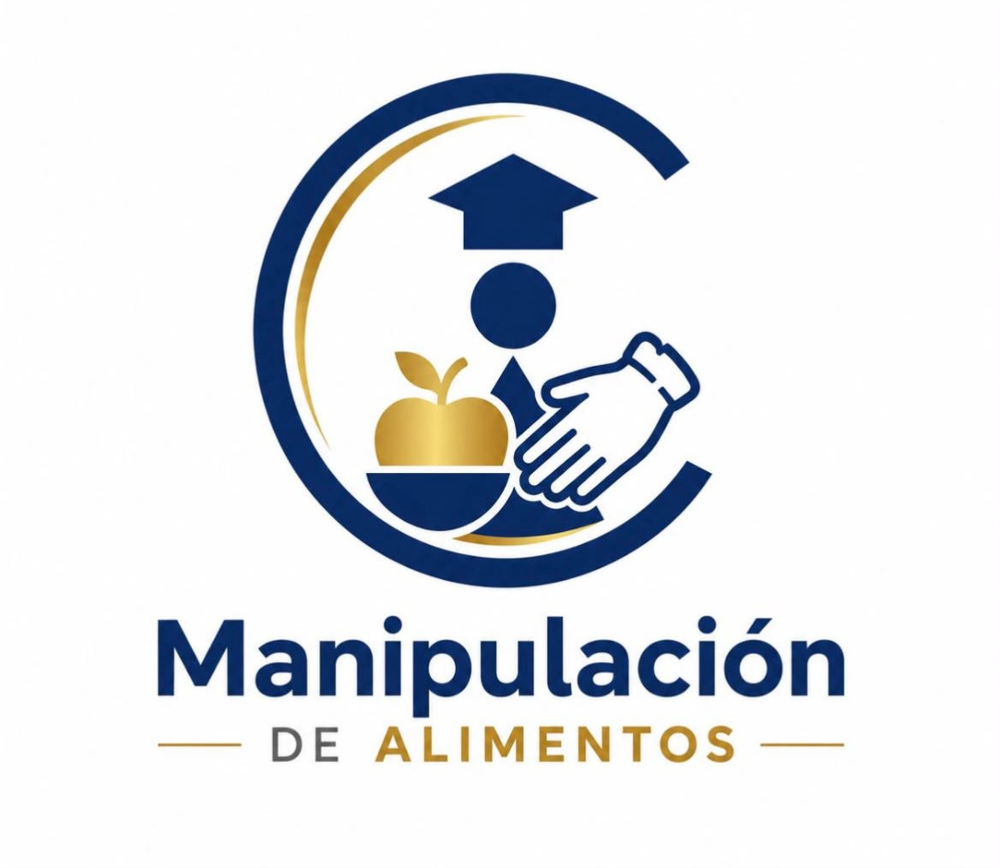

Instituto del Centro
Manipulación Segura de Alimentos
Capacitación dictada por Instituto del Centro.
Al finalizar y aprobar el curso, el alumno recibe un
Certificado de Aprobación emitido y avalado por Instituto Ferrer.
Información del curso
- Duración: 2 meses
- Modalidad: online
- Clases en vivo por Zoom
- Material de lectura descargable
- Actividades prácticas y evaluación final
- Precio: $35.000 por mes
- Sin costo de inscripción ni examen
¿Qué vas a aprender?
- Buenas prácticas de manipulación de alimentos.
- Normas básicas de higiene personal y laboral.
- Tipos de contaminación alimentaria.
- Prevención de enfermedades transmitidas por alimentos.
- Limpieza y desinfección de espacios de trabajo.
- Conservación segura de alimentos y cadena de frío.
- Uso responsable de materiales, utensilios y superficies.
¿A quién está dirigido?
- Personas que trabajan en gastronomía.
- Emprendedores gastronómicos.
- Personal de bares, restaurantes, comedores y panaderías.
- Personas que elaboran o venden alimentos.
- Público en general que quiera capacitarse.
Salida laboral
Este curso permite fortalecer el perfil laboral de quienes desean desempeñarse en comercios gastronómicos, comedores, servicios de catering, panaderías, rotiserías, emprendimientos alimentarios o espacios donde se elaboren, manipulen o vendan alimentos.
Beneficios
- No requiere conocimientos previos.
- Se cursa de manera online.
- Incluye acompañamiento durante la cursada.
- Permite mejorar tus conocimientos sobre seguridad alimentaria.
- Ayuda a fortalecer tu presentación laboral.
Preguntas frecuentes
¿Necesito experiencia previa?
No. El curso está pensado para personas con o sin experiencia.
¿La cursada es online?
Sí. Las clases se realizan en vivo por Zoom y se entrega material digital.
¿Recibo certificado?
Sí. Al aprobar el curso recibís un Certificado de Aprobación emitido y avalado por Instituto Ferrer, correspondiente a la capacitación dictada por Instituto del Centro.
¿Tiene costo de inscripción?
No. No tiene costo de inscripción ni derecho de examen.
Modalidad online - Cupos limitados
Inscribite acá